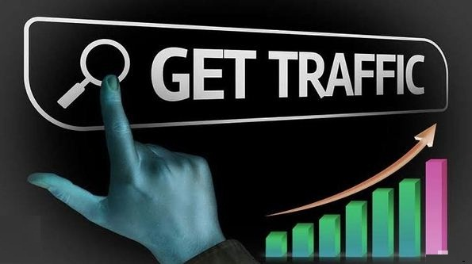

Adsense Bot Traffic: What You Need To Know

Adsense Loading Tricks 2023
Learn More: Click
Here→
What is Adsense Bot Traffic?
AdSense Bot Traffic refers to the visits or clicks on AdSense ads generated by automated bots rather than genuine human users. These bots are software programs designed to mimic real user behavior and interact with websites, including clicking on advertisements.
AdSense is an advertising program offered by Google that allows website owners to earn revenue by
displaying ads on their sites. Advertisers pay Google to have their ads shown, and website owners
receive a portion of that payment when users click on those ads. However, there are instances where
automated bots artificially generate clicks on AdSense ads, which can disrupt the integrity of the
advertising ecosystem.
Learn More→
Is AdSense Bot Traffic against Google's policies?
Yes, AdSense bot traffic is against Google's policies. Google expects publishers to maintain a healthy and transparent advertising ecosystem. Generating artificial or invalid clicks on AdSense ads, including through the use of bots, is considered fraudulent activity and is strictly prohibited.
Google's policies for AdSense clearly state that publishers must not click on their own ads or encourage others to do so, whether manually or through automated means. This includes any attempt to artificially inflate ad clicks, impressions, or any other metric associated with ad performance.
Engaging in AdSense bot traffic can lead to serious consequences, including the suspension or termination
of a publisher's AdSense account. It is essential for publishers to abide by Google's policies and
ensure that all ad interactions on their website are genuine and driven by real users.
Learn More→
Become a Freelancing Web Developer in 2023
Click Here→
List of Adsense Bot Traffic Sources
We've listed some of the most common sources from which AdSense bot traffic may originate. They are listed below:
- Automated scripts: Bots can be created using automated scripts that mimic human behavior, such as browsing websites, clicking on links, and interacting with ads.
- Proxy servers: Some bot traffic may come from proxy servers that are used to mask the actual source of the traffic. Bots can be programmed to cycle through various proxy servers to make it harder to detect their activities.
- Botnets: Botnets are networks of compromised computers or devices that are controlled by a central command. Bot traffic can be generated from these botnets, often without the knowledge of the device owner.
- Click farms: Click farms are operations where individuals or groups are paid to click on specific links or ads repeatedly. These click farms can generate artificial traffic and impressions.
- Malware-infected devices: Bot traffic can be generated by malware-infected devices that are programmed to perform certain actions, such as clicking on ads or visiting specific websites, without the user's knowledge.
- Scrapers and crawlers: While not all scrapers and crawlers are malicious, some bots may scrape website content or crawl web pages in a way that mimics human behavior, potentially generating bot traffic.
- Traffic exchanges and paid traffic services: Some paid traffic services or traffic exchanges may employ bots to generate traffic for their clients. These sources may not always be transparent about the use of bots.
Using such techniques can result in your Adsense account being suspended or terminated. They can also harm the advertising ecosystem by creating fake clicks and impressions, leading to lower ad quality and revenue for legitimate advertisers.
How can I block AdSense bot traffic and protect my ads?
To protect your ads and block AdSense bot traffic, here are some recommended practices:
- Monitor Traffic Analytics: Regularly monitor your website's traffic analytics and look for unusual patterns, such as abnormally high click-through rates (CTRs), sudden spikes in traffic from certain sources, or suspicious user behavior. If you notice any anomalies, investigate further and take appropriate actions to mitigate the impact.
- Implement Captchas or Human Verification: Consider implementing Captchas or other human verification mechanisms on critical pages where ad interactions occur. These mechanisms help ensure that only real users can interact with your ads, reducing the chances of bot-driven clicks or impressions.
- Review Referral Sources: Keep an eye on the referral sources that drive traffic to your website. If you notice suspicious or unfamiliar sources generating a significant amount of traffic, investigate them further and consider blocking or excluding them from your ad campaigns.
- Stay Informed: Stay updated with the latest information and best practices recommended by Google AdSense. Google periodically releases guidelines and suggestions to help publishers protect their accounts from invalid traffic. Adhering to these practices can minimize the risk of bot traffic affecting your ads.
Remember, it's important to strike a balance between blocking invalid traffic and ensuring legitimate users can access your content and ads. It's always advisable to monitor and analyze your traffic regularly to identify and address any issues promptly.
Learn More→
Quick Ways To Make Money Online From Home
Click Here→